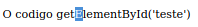
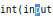

Vejá essas imagen:
Img 1:
Img 2:

Veja que o caractere t da
Img 1 não tem o mesmo comprimento
do caractere E da Img 2
e isso faz com que dificulte a
visualização de determinado
exemplo de codigo, mas pra isso
temos a tag <code>.
Veja um exemplo da ultilização da tag:
Agr veja o resultado:
Agora vamos ver se todos os caracteres estão monoespaçados:
Img 1 monoespaçado:
Img 2 monoespaçada:

Veja agora que os caracteres i e t tem o mesmo
comprimento.
Mas temos um outro problema, ao olhar pra imagem
do resultado
do codigo de Python (.py) verá que não está da forma
correta que
deve ser, que seria uma linha abaixo da outra e pra
isso, temos a tag:
<pre> essa tag vai considerar todos os espações e
quebras de
linhas que tiver no codigo fonte, veja o exemplo da
ultilização dessa
tag:
Agora veja o resultado:
Pode comparar o codigo fonte com o resultado e verá que a tag
considerou o espaçamento e as quebras de linha.
<q> ela é uma tag para citação, vejá um exemplo:
Mas para momentos em que você está fazendo uma "metáfora",
como está que acabei de fazer, pode adicionar as aspas manualmente.
<blockquote> ela serve para uma citação completa,
exemplo seria
a frase de um determinado autor, vejá esse exemplo:
Veja seu codigo fonte:
<abbr> é uma tag para abreviações, ao passar o
mouse por cima
dessa abreviação verá o significado, vejá:
HTML-CSS
vejá um exemplo da ultilização dessa tag: